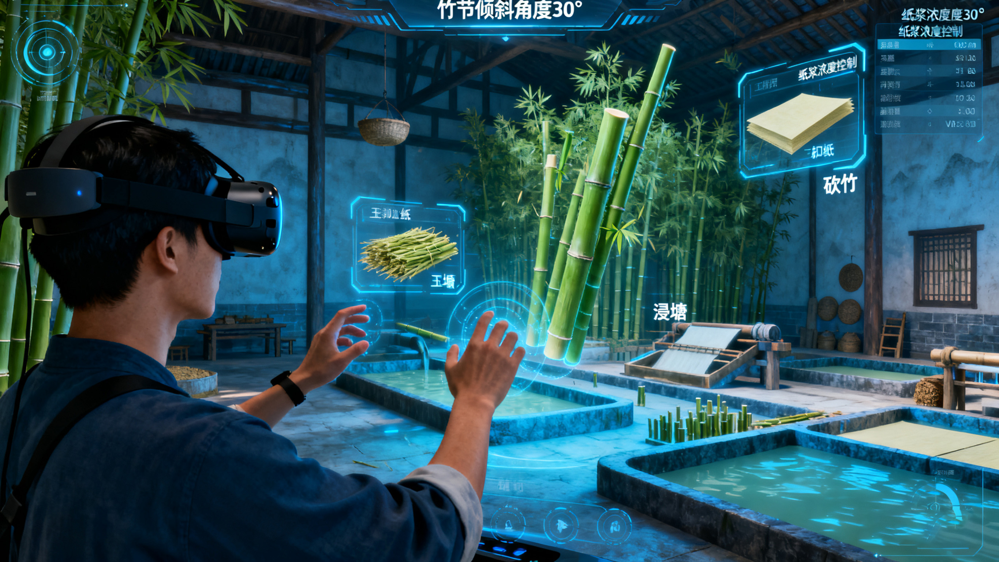
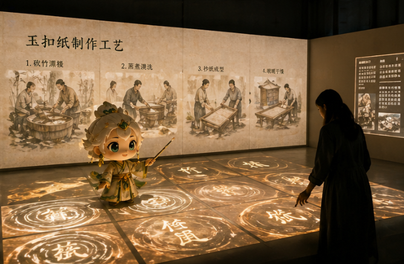

客家非遗数字电商平台
首页
虚拟体验
非遗档案库
畲乡玉扣纸
其他客家非遗
研习中心
在线课程
研学实践
文创商城
IP孵化中心
合作入驻
关于我们
🎬 工艺视频实拍体验
由省级传承人胡铖指导操作，完整演示古法造纸核心工序
您的浏览器不支持 video 标签。
古法造纸核心工序完整演示 | 时长：2分钟
🥽 VR/AR虚拟工坊
“化身匠人”沉浸式体验 · 还原清代纸寮场景

VR/AR体验
化身匠人 · 古法造纸沉浸式体验
技术支撑：Unity引擎 + ARCore/ARKit，支持移动端与VR设备
核心体验：虚拟场景还原清代纸寮，可操作“砍竹-浸塘-抄纸”等工序
互动反馈：系统实时提示操作规范，如“竹帘倾斜角度”“纸浆浓度控制”
适用场景：大赛现场演示、学校非遗课堂、文化展会互动
体验Demo（演示版）
✨ 光影交互展 · 纸上的千年文明
全息投影 + 触控交互，重现玉扣纸历史足迹
“玉扣纸的历史足迹”主题展
技术形式：全息投影 + 触控交互，还原玉扣纸在不同历史时期的应用场景
核心内容：展示《毛泽东选集》（线装本）印刷场景、牛津大学古籍重印过程、畲族族谱修订现场
互动设计：观众触摸投影界面，可查看对应场景的历史背景与工艺细节
